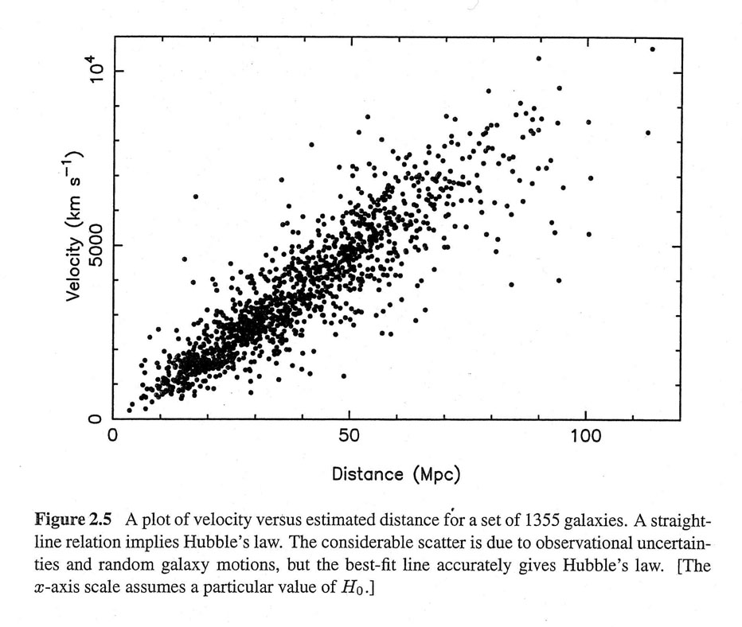

Hubble's Law
Hubble's Law states that:
“The larger the distance a celestial body is from Earth, the larger the recessional velocity”
In layman's terms, stuff that is far away will only get further away faster. This law can be summarised into an equation:
\(v=H_{o}D\)
Where:
- \(v\) is the galaxy's recessional velocity
- \(H_{o}\) is the Hubble constant \(70kms^{-1}Mps^{-1}\)
- \(D\) is the distance between the observer and other celestial body
Hubble's law has allowed us to determine a celestial body is close or far away from us. Combined with redshift, it helps us calculate how long the universe has existed for, based on how fast things are moving away from each other right now.
This was calculated through the use of the scientific method and also graphing. We're not very good at graphing, so here's a photo I found on the internet.

As you can see, the galaxies seem to move at a speed following an approximate line of best fit. This is how Hubble's Constant was calculated.
This, combined with redshift, offers major proofs for the beginning of the universe.